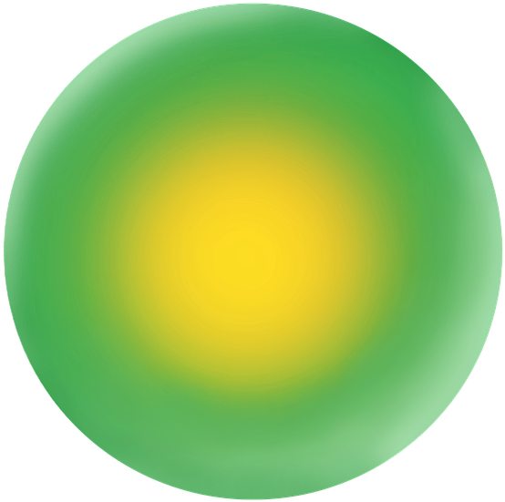
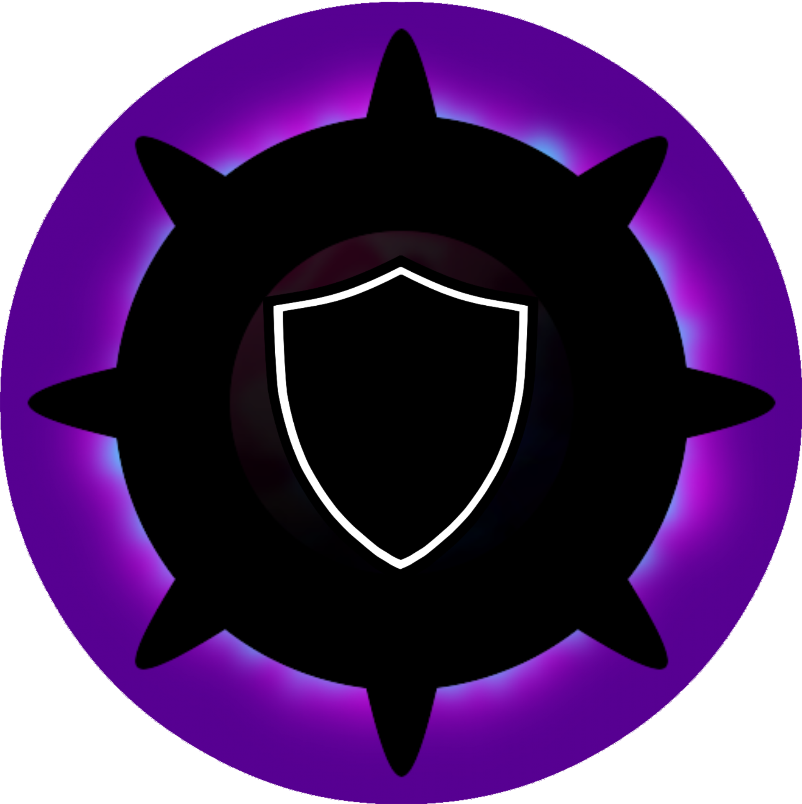
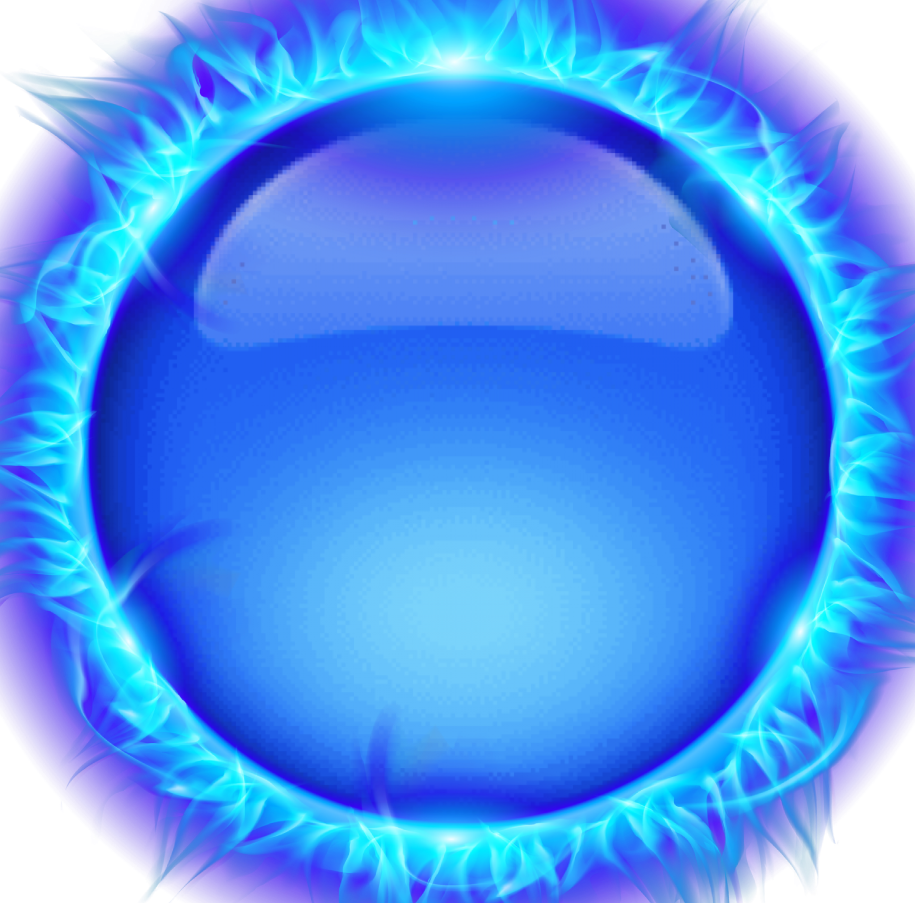
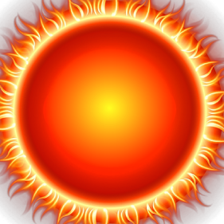
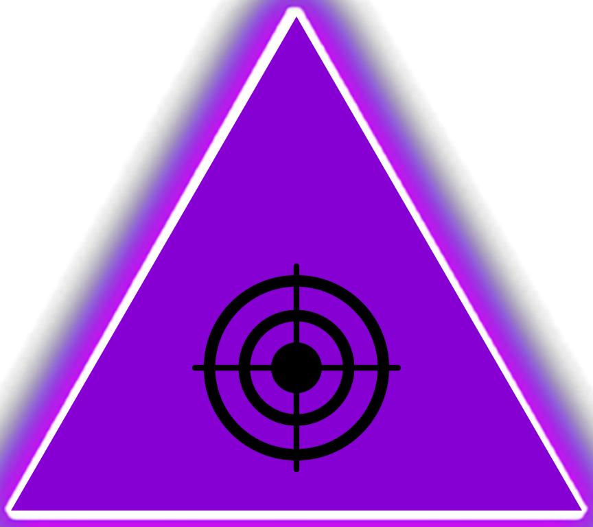
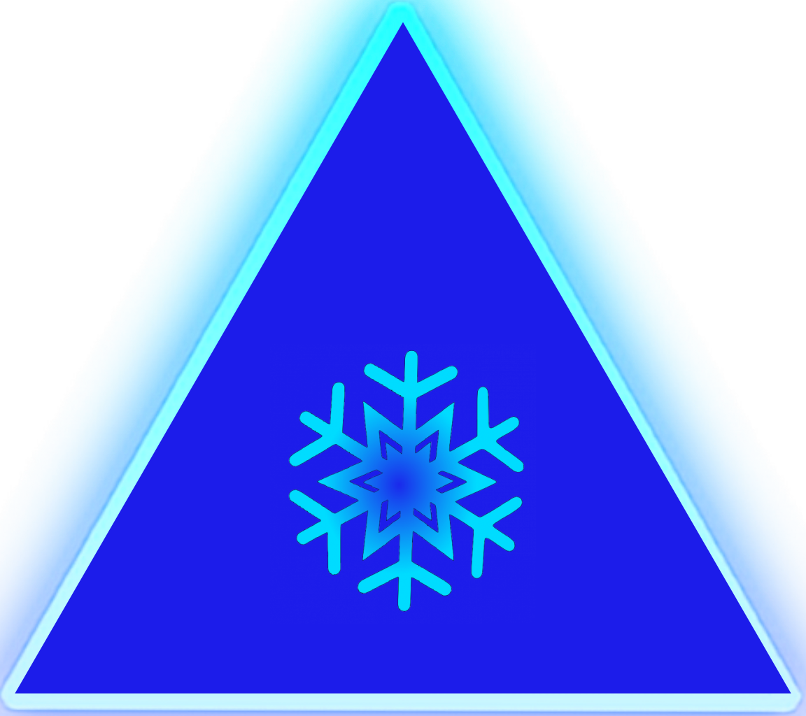
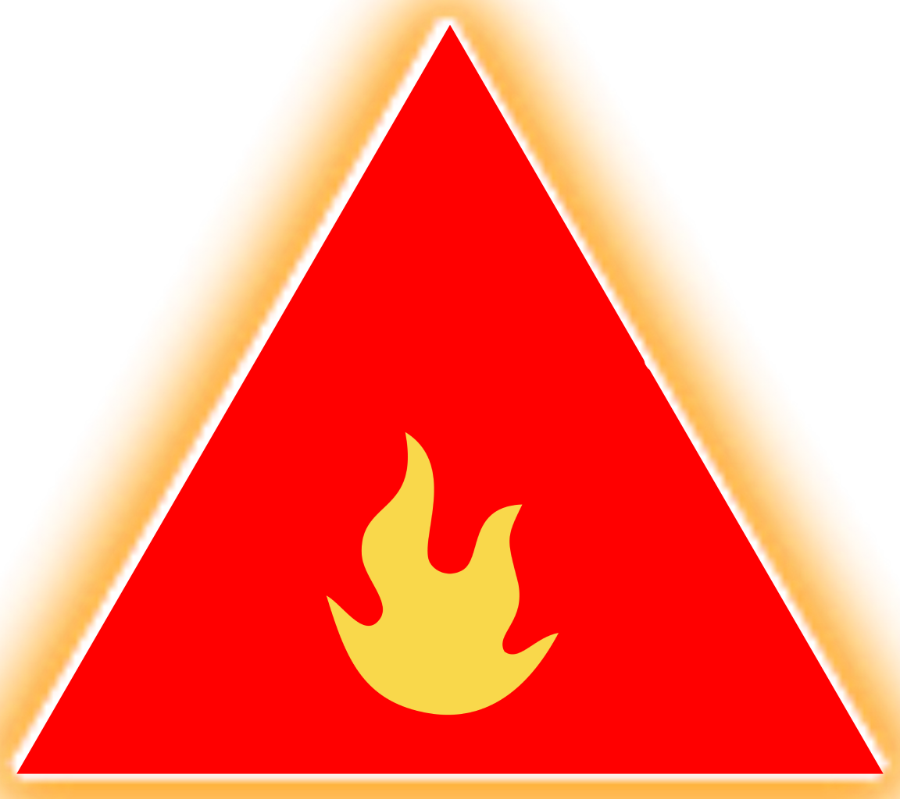

Rules
This game is a Tower Defense like, but we adapted it to be a reflection game.
But, what is a Tower Defense ?
Usually, this is a real-time strategy game, but in Polygon TD, there is no real-time reactions.
The main goal in these games is to kill incoming enemy creeps and prevent them from reaching a certain spot
on the map like the entrance to your base. To do this, build towers that will attack enemies.
Polygon TD has some differences with a normal Tower Defense :
- You can only add towers between enemies' waves
- Before the next wave, you know exactly which type of enemies will spawn and in which order
These differences make this game a reflection game only.
To build towers, there is a money system. Each time you win a wave, you earn some money.
You can lose the game by only one manner : If an enemy cross the map and reach base.
Enemies
 The lime circle is a very standard enemy. It has 3 health and has no particularities.
The orange circle is stronger than the lime one, it has 2 extra health so it has 5 health.
 The purple circle is a big boy. So it tanks a lot more damages than the others one because it has 15 health. Otherwise, he has nothing more.
 The blue circle is a frozen little boy, and it hates fire ! It's weaker than the standard enemi because it only have 2 health, but it can only be destroyed by fire towers.
 The red circle is the hot version of the blue one. It is made of fire and so it hates ice shots. Only ice towers can affect it, but it has the same health.
Towers
 The yellow tower is a fast DPS tower, it deals only 1 damage and but has 1 attack cooldown.
 The purple tower deals a lot of damages, 15 exactly, but has 15 attack cooldown. It's the best option to kill tank ennemies !
 The blue tower is the only one that can destroy fire enemies. It does not affect ice enemies, but it deals 1 damage with an attack cooldown at 2 to the others ones !
 The red tower deals fire damages, so fire enemies are immunes, but do criticals attacks to ice ones. It has 1 damage and 2 attack cooldown on others enemies too.